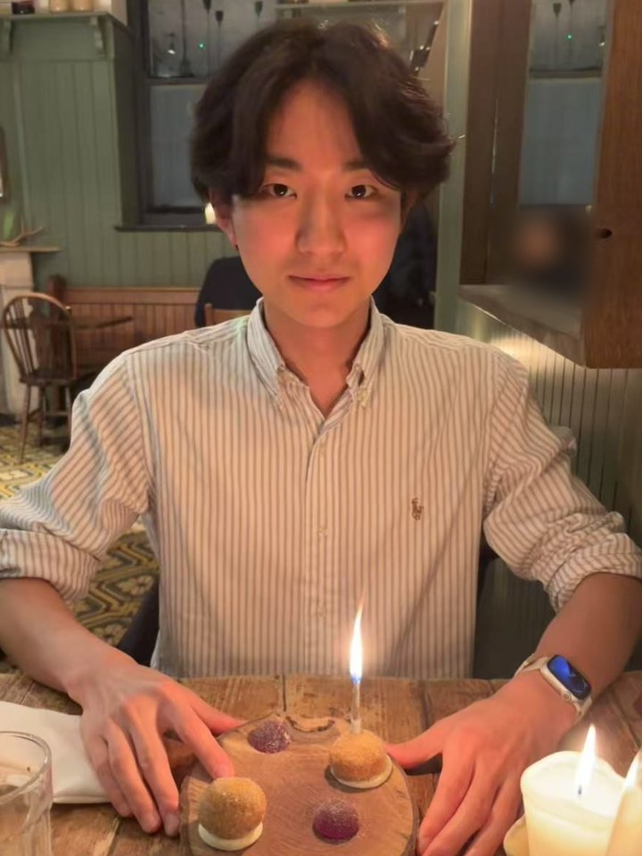

Kodai Tsutsui
MEng Engineering Science, St Hugh's College, University of Oxford

I work on learning-based control for legged robots and humanoids. For my master's thesis I'm working on contact-based loco-manipulation on the Unitree G1, using human motion retargeting, whole-body tracking and learned contact planning.
My research internship in the Articulated Robotics Group at the Oxford Robotics Institute, supervised by Ioannis Havoutis, is Beyond Acrobotics. It extends the Acrobotics generalist parkour pipeline to new robot bodies and to the imperfect height maps that depth cameras produce. The policies run on ANYmal D, a wheeled Unitree Go2-W and a Unitree G1 humanoid in simulation, and I'm currently deploying on ANYmal D and G1.
I also co-lead Oxford STRIDE, a student team building the Berkeley Humanoid Lite. Before this I worked on bipedal robots at Algomatic in Tokyo and on a haptic training device in Oxford's Healthcare Biorobotics Lab. My full background is on the CV page.
news
- Oct 2026
- Won joint second place and the Hackiest Hack award at OxHack, developing a robot arm in 25 hours that can draw any image on a whiteboard and erase it.
- Oct 2026
- Started as a master's student in the Articulated Robotics Group at the Oxford Robotics Institute, working on humanoid loco-manipulation.
- Oct 2026
- Became a project lead of Oxford STRIDE.
- Aug 2026
- Started an EPSRC-funded research internship in the Articulated Robotics Group, working on Beyond Acrobotics.
- Jun 2026
- Joined Boston Consulting Group in Tokyo as a Summer Associate.
- Mar 2026
- Started as an AI robotics engineering intern at Algomatic in Tokyo.
- Mar 2026
- Team OxBots placed 3rd of 36 at the Unibots UK National Finals, and 2nd of 31 at the Cambridge Regional.
- Jun 2025
- Joined Oxford's Healthcare Biorobotics Lab as a research intern.